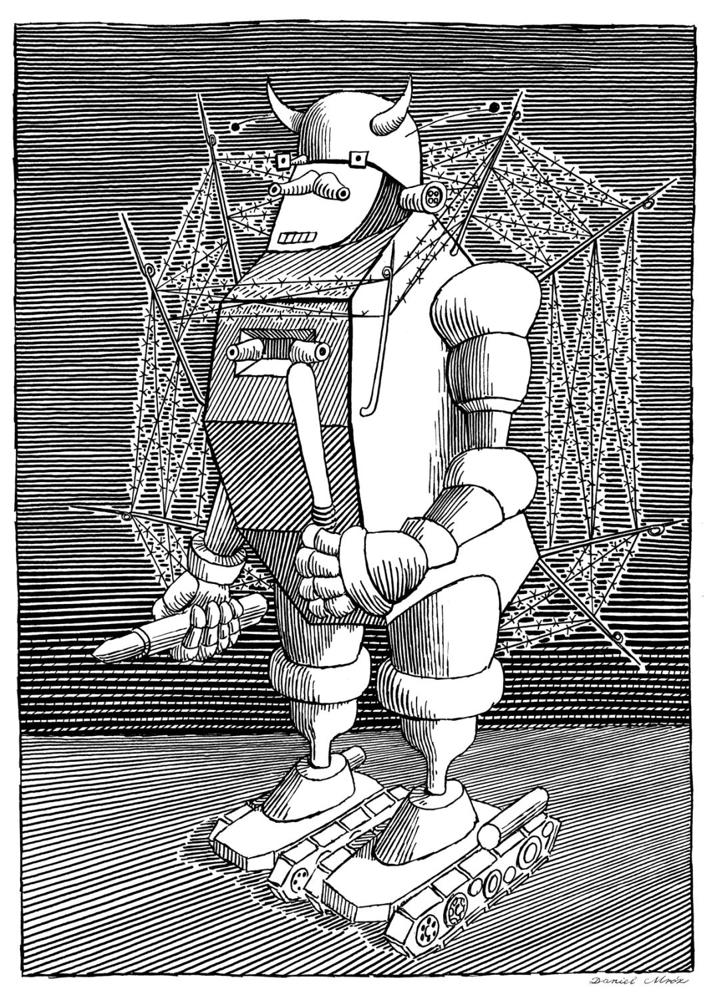
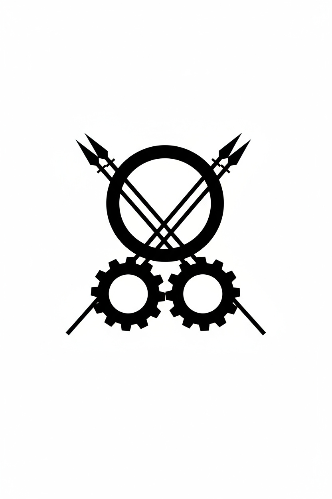

El Reino de Monstrogritería
|  |  |
Geografía
Monstrogritería ocupa la mitad occidental del continente único de Mirpia. Su situación geográfica es extraordinaria por la presencia de una frontera perfectamente recta que lo divide del estado vecino y eterno enemigo, Monstropitería, asentado en la mitad oriental y dirigido con mano de hierro por el sátrapa Monstropito, eterno enemigo de Monstrogrito.
De acuerdo con las crónicas cartográficas gargancianas, la orografía de ambos países es exacta y especular, como si uno fuera la imagen invertida del otro. Esta simetría territorial es presentada por ambos estados como una “provocación natural” que justifica su conflicto perpetuo.
Las principales ciudades del reino incluyen:
- Ciberópolis (capital)
- Bravorema, centro de maniobras militares de bajo coste
- Atronalia, especializada en infraestructura austera
- Gritópolis, sede del Consejo del Ahorro Eterno
Historia
Monstrogritería se formó tras la consolidación del poder de la dinastía Bartolina, cuyos monarcas se caracterizan por poseer, simbólica o metafóricamente, “cien ojos atentos al gasto del reino”. El ascenso de Monstrogrito I, conocido por su férrea autoridad y su habilidad natural para detectar despilfarros imaginarios fabricados en el Departamento de Fantasías Oficiales, marcó el inicio de un régimen extremadamente austero y fuertemente militarizado.
Desde tiempos inmemoriales, Monstrogritería se halla en conflicto con Monstropitería, gobernada actualmente por el Rey Monstropito, archienemigo, antagonista y némesis del Rey Monstrogrito. Ambos soberanos mantienen la llamada Guerra del Recurso Ínfimo, disputa perpetua por un territorio tan pequeño y carente de valor que su posesión se considera estrictamente simbólica.
Gobierno y política
El Reino de Monstrogritería es una tiranía perpetua hereditaria en la que el rey ostenta autoridad absoluta. Su gobierno se articula alrededor de instituciones diseñadas para mantener la disciplina, evitar cualquier forma de lujo y justificar el estado de guerra permanente.
Entre sus organismos principales destacan:
- Consejo del Ahorro Eterno, encargado de aplicar recortes formales e informales.
- Ministerio de la Guerra Precautoria, responsable de la justificación continua de la guerra.
- Policía del Exceso, fuerza represiva dedicada a castigar cualquier gasto prescindible.
- Oficina de Denuncias y Lujos Inadmisibles, encargada de fiscalizar la actividad ciudadana.
El poder del rey Monstrogrito I se expresa mediante los Edictos del Puño Cerrado, decretos obligatorios que refuerzan rutinas de austeridad o convocan severas festividades.
Economía
La economía del reino descansa sobre cuatro pilares fundamentales:
Austeridad estructural
Considerada la máxima virtud estatal. El racionamiento es permanente y los ciudadanos deben justificar cualquier compra que exceda lo estrictamente necesario. Las casas reales promueven la cultura del “más vale nada que algo”.
Arte de la guerra: las contiendas victoriosas
El conflicto con Monstropitería genera empleos, manufactura armamentística de bajo coste y un flujo constante de propaganda motivacional lo que hace girar los engranajes de la economía nacional.
Nacionalización de la alta traición
Una característica única del reino. Monstrogritería ha convertido la traición en un servicio público oficial. Los llamados Vendidos de la Corona son funcionarios cuya labor consiste en vender secretos de estado a espías enemigos, siempre a un precio fijado por el Secretariado de Economía Bélica del Ministerio de la Guerra Precautoria. El gobierno sostiene que esta práctica “equilibra el siempre voluble mercado de intrigas”.
Las denuncias como motor económico
La población es animada a denunciar excesos, lujos y sospechas de despilfarro o traición. Para evitar el colapso administrativo por exceso de estas, quienes presentan demasiadas, en lugar de sanear su debilitada economía doméstica, deben pagar un Impuesto de Denuncia Suntuaria, que regula el volumen nacional de chivatazos y alimenta las arcas del estado.
Cultura
La cultura monstrogriteriana se basa en la austeridad ceremonial, la exaltación del sacrificio obligatorio y la autoinmolación pedagógica. Se promueve el noble cultivo del analfabetismo funcional, el desarrollo continuado del espíritu acrítico y la utilización de redes sociales carentes de contenido desde edades muy tempranas
Fiestas nacionales
Destaca la Fiesta de Ejecución de Funcionarios Superfluos, jornada anual de marcado caracter familiar en la que se celebra la eliminación de puestos innecesarios. Tras la abolición del cargo de verdugo por considerarse un gasto excesivo, los funcionarios condenados deben decapitarse ellos mismos, o en casos de excepcional favor real, pueden recibir la asistencia de familiares cercanos.
Artes
Solo se promueven las disciplinas artísticas de bajo coste:
- Recitación a coro, preferiblemente sin acompañamiento o con acompañamiento de palmas y percusión corporal.
- Ajedrez estatal, con piezas reutilizadas durante generaciones y de propiedad nacional y Parchís de dado único y fichas del mismo color.
- Gimnasia militar, considerada expresión estética del cuerpo disciplinado.
Relaciones exteriores
Las relaciones diplomáticas con Monstropitería están dominadas por la hostilidad mutua, aunque ambas naciones mantienen un intercambio comercial clandestino: Monstrogritería compra sus propios secretos de estado revendiéndolos, con sobreprecio, a agentes de Monstropitería para luego recuperarlos en operaciones igualmente lucrativas.